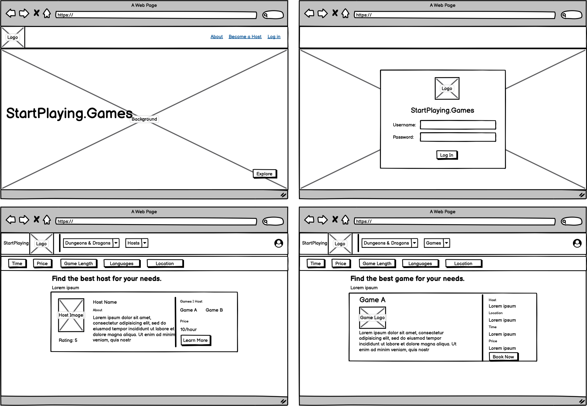
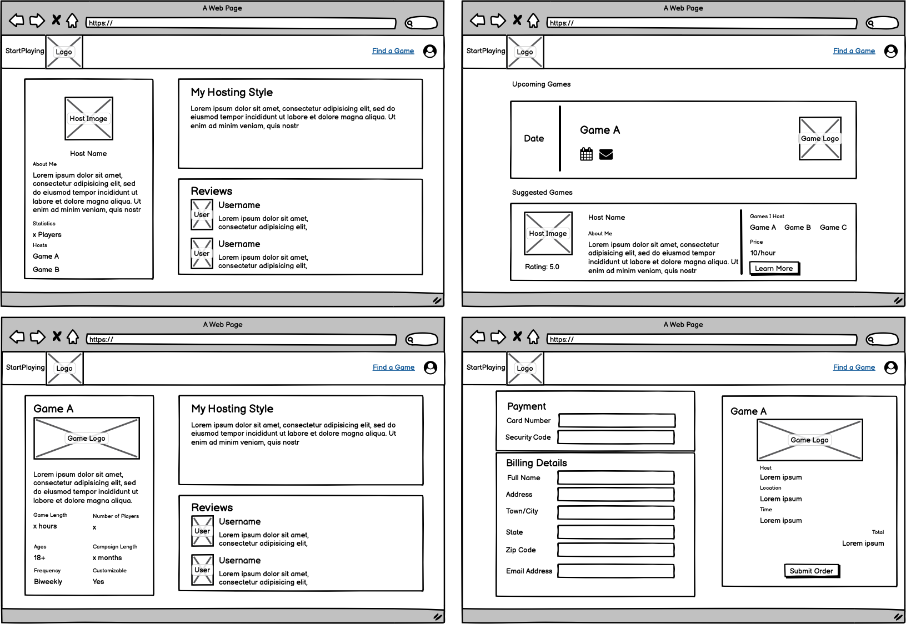

Strategies: UX/UI Design, Prototyping, User Research
Timeline: Oct-Nov 2020
Tools Used: Balsamiq, Figma
Iterative design is a powerful process involving prototyping, testing, analyzing, and refining the product until a final design is reached. For this project, I worked in a group with 2 other students from my UI/UX class. We wanted to put this technique into practice by designing a web interface for Y-combinator startup StartPlaying.Games, which aims to be an online marketplace for tabletop players to find games and/or game hosts. Unlike a traditional redesign, we wanted to create a design for this site without referencing the original website or any existing assets.
After getting acquainted with the startup's purpose and goals, the first step was to create sketches of the main pages that would be required. Each member of our group came up with our own vision of what the site would look like and created a set of basic sketches.
After coming up with our sketches, we got together to combine our ideas and create a final wireframe.
 With our lo-fi wireframes in hand, we were ready to create a hi-fi mockup of the site. For the visual aesthetics, we envisioned a sleek design with a color palette comfortable with gamers. Thus, we developed a dark mode theme, and used a single font throughout the site with varying sizes and weights for a cleaner look. To maintain a consistent appearance, we also choose to use a single highlight color, a light blue, to accent certain interface elements. Below is our first hi-fi iteration:
After finishing our first hi-fi prototype, we asked other students to give us feedback. We received a lot of constructive criticism on our design which allowed us to further improve our design. Some of the feedback we received includes:
Using this feedback, we came up with another set of mockups. Here is an example of a change we made - notice how we bumped up the hierarchy of the "Book Now" call-to-action, and rearranged sections to add more information about the game:
Our improved prototype is shown below:
With our much improved hi-fi design, we decided to take the prototype to UserTesting.com, a site where real users can interact with and give feedback on the usability of a prototype. We provided each user with testing instructions and asked them questions about the usability of our site.
Testing Instructions:
Post-Testing Questions:
After gathering feedback from our user tests, we came up with the following changes to make in the future:
Creating a design completely from scratch and without using an existing design is defintely a unique experience. I felt that we had more freedom to experiment with different layouts and designs since we were making everything from scratch. I also learned that iterative design and user testing are extremely power tools. I think our final design defintely would not have been as successful without going through different iterations of our hi-fi prototype and gathering feedback at each step in the process.